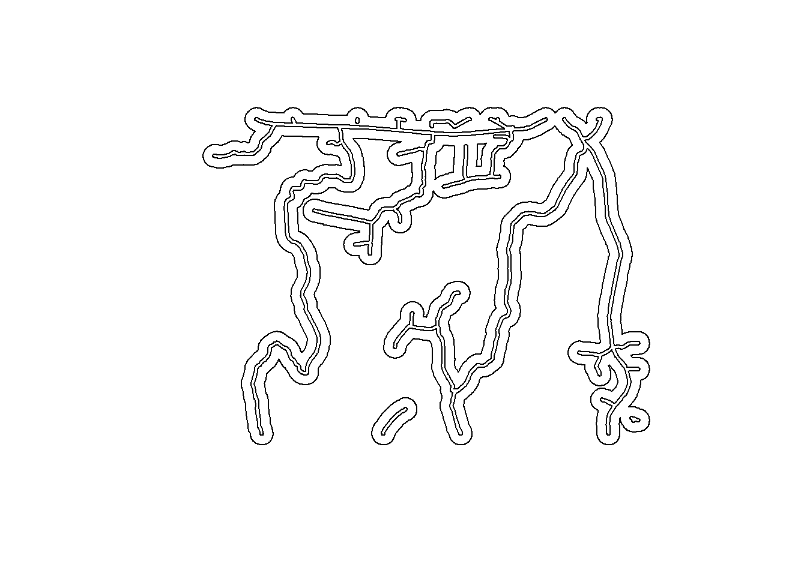
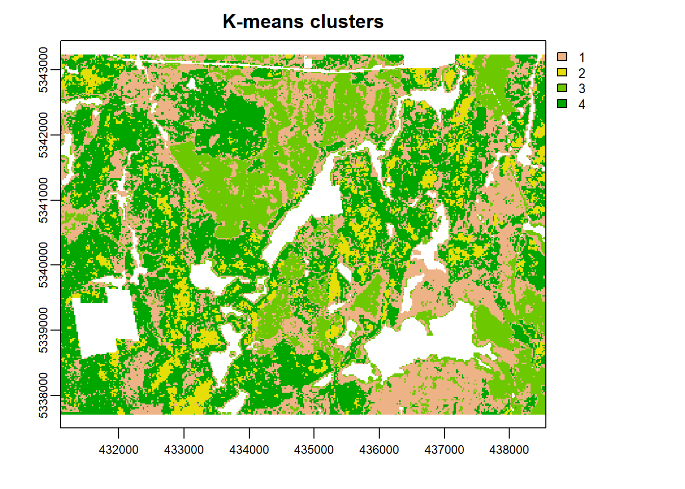

Data Preparation
To show the sampling methods in action I use the example data from the Romeo Malette forest in Ontario. These data are included in the RMFInventory package.
These data were prepared suing the following method:
- Compile wall-to-wall structural metrics from ALS acquisition
- Utilize spatial forest inventory layer to isolate regions of interest for sampling
- Create internal and external road buffer for future access buffering
## [1] "as.data.table"Load wall-to-wall metrics
#Load required libraries
library(RMFinventory)
library(raster)
library(sf)
### Raster DATa
wall_metrics <- brick(system.file("extdata","wall_metrics_small.tif", package = "RMFinventory"))
names(wall_metrics) <- c("avg", "cov", "std","p10", "p20","p50","p70","p95", "p99","d0","d2","d4","dns")
#Coordinate system of wall-to-wall raster
wall_crs <- raster::crs(wall_metrics)
#Plot
plot(wall_metrics$avg)
Here we see the wall-to-wall coverage of ALS for our study area. We must be cognizant that some of the area within this coverage is not appropriate or desired from an inventory sampling perspective. This requires forest managers or data users to know which areas should be included/excluded for future stratification and/or sampling protocols.
Integrate forest inventory layers
To filter areas we use the following approach where spatial forest inventory layers are used to mask wall-to-wall metrics to isolate regions for sampling.
### forest polygons
#read forest polygon shapefile
poly <- st_read(system.file("extdata/inventory_polygons","inventory_polygons.shp", package = "RMFinventory"))## Reading layer `inventory_polygons' from data source `G:\Programs\R-4.0.3\library\RMFinventory\extdata\inventory_polygons\inventory_polygons.shp' using driver `ESRI Shapefile'
## Simple feature collection with 632 features and 111 fields
## geometry type: MULTIPOLYGON
## dimension: XY
## bbox: xmin: 431100 ymin: 5337700 xmax: 438560 ymax: 5343240
## projected CRS: UTM_Zone_17_Northern_Hemisphere#Match CRS of wall-to-wall raster layer
poly <- st_transform(poly, wall_crs@projargs)
poly_subset <- poly[poly$POLYTYPE == "FOR" & poly$OWNER == 1, ]
plot(st_geometry(poly_subset), axes = TRUE, col = "red")
poly_subset <- st_union(poly_subset)
plot(st_geometry(poly_subset), axes = TRUE, col = "red")
#Transform to SpatialPolygonDataFrame object for compatibility with the raster package
poly_subset <- sf::as_Spatial(poly_subset)
#Mask wall-to-wall layer
wall_poly <- raster::mask(wall_metrics, mask = poly_subset)
plot(wall_poly$avg)
## Convert raster into data table for tabular representation of candidates
rast_dt_wall <- as.data.table.raster(wall_poly,xy=T)We have masked regions based on ownership and forest type, leaving forested areas that are suitable for stratification and sampling.
Prepare road buffers for future masking
Access is an important consideration for forest development, and in the case of inventory sampling could be leveraged to reduce operational costs and improve efficiency of measurement campaigns. For this reason we also present a method to use available road network layers to generate internal and external road buffers to isolate candidate ALS pixels based on distance from road.
This process implies that managers have a specified minimum and maximum distance from road centerlines within which sampling can be conducted.
### roads
#read roads shapefile
roads <- st_read(system.file("extdata/roads","roads.shp", package = "RMFinventory"))## Reading layer `roads' from data source `G:\Programs\R-4.0.3\library\RMFinventory\extdata\roads\roads.shp' using driver `ESRI Shapefile'
## Simple feature collection with 167 features and 36 fields
## geometry type: MULTILINESTRING
## dimension: XY
## bbox: xmin: 431100 ymin: 5337700 xmax: 438560 ymax: 5343240
## projected CRS: UTM_Zone_17_Northern_Hemisphereroads <- st_transform(roads, wall_crs@projargs)
plot(roads["RDTYPE"])
# Select only suitable road types
# Highway (H), Municipal (M), Primary (P), Branch (B), Clay/mineral surface haul (C) and roads accessed when dry or frozen (d) , graveled (g), industrial grade road (i), highway or municipal road(r), yearly accessible (y)
roads_subset <- roads[roads$RDTYPE %in% c("H", "M", "P", "B", "C") &
roads$RDMOD %in% c("d", "g", "i", "r", "y"), ]
# Dissolve roads layer to work with only 1 feature
roads_subset <- st_union(roads_subset)
plot(st_geometry(roads_subset))
#Create buffers of 30 m and 200 m
roads_buffer_30m <- st_buffer(roads_subset, dist = 30)
roads_buffer_200m <- st_buffer(roads_subset, dist = 200)
#Take the symetrical difference between buffers to keep only roads >- 30 m AND <= 200 m
roads_buffer <- st_sym_difference(roads_buffer_200m, roads_buffer_30m)
plot(st_geometry(roads_buffer))
#Transform to SpatialPolygonDataFrame object for compatibility with the raster package
roads_buffer <- sf::as_Spatial(roads_buffer)Road buffering outputs
#Mask wall-to-wall layer
wall_poly_roads <- raster::mask(wall_poly, mask = roads_buffer)
plot(wall_poly_roads$avg)
## Convert raster into data table for tabular representation of candidates
rast_dt <- as.data.table.raster(wall_poly_roads,xy=T)